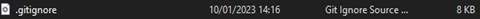

As we are now going to be going through the process of using branching and merging effectively in our project now is a good time to introduce the topic of the gitingore system and why we use it.
gitignore files are files that specify certain files from your current working directory that will be ignored by the git service you are using when completing commits.
gitignore files usually consist of machine generated files such as build artifacts or temporary files and logs generated when testing. These files are not needed by the main project repository and can take up unnecessary space whilst also making the committing process more complicated.
GitHub desktop has a selection of common gitignore files that you can add into your document when creating a repository. You can do this by selecting the required gitignore when you’re creating a repository
When in the Create a new repository wizard click the “Git ignore” dropdown and you will see a list of the pre-installed gitignores that come installed with GitHub desktop.
For C# programs we want to use the “Visual Studio” gitignore. Scroll down and find “Visual Studio” in the list and click on it. This will ensure the correct files are not uploaded when you push commits. When you have done this, it should close the dropdown and the gitignore file you chose should appear in its place.
You are then free to create your repository as normal.
To ensure your gitignore file has been added as expected, view your repo in windows explorer begore you push it up to GitHub. You should be able to see the gitignore file.
If you are using Unity to create a project (or other engines) ensure that you have chosen the requisite gitignore file to go with them, as if you don’t these programs can struggle with source control which may affect your project. GitHub desktop provides inbuilt gitignores for Unity, Unreal and Godot which should all be used when needed.
Using the knowledge, you gained from last week create a new Git repository called “Branch Testing” using GitHub desktop and push it to GitHub.
When your repository is created and visible in GitHub desktop the next step is to create a new branch that you are going to work on. In order to do this, navigate to the top of the screen and click the “Current branch” button.
This will open a new window that allows you to create a new branch as well as viewing the ones that are already active. The window should look like the one below.
To create a new branch, click the “New branch” button - a new window should pop up asking you to name your new branch:
Name your branch “Adding Counter” and press the “Create branch” button to add the branch to your project.
You will be redirected back to the repository window and on first glance it will not look like much has changed. But on further investigation you will see that your current branch has changed from “Main” to “Adding-Counter”.
This means that any changes you make (or add) will be added to the branch and *not* the main repository.
Before we begin to make changes to our branch, similar to when we create a new repository, we need to publish the branch to GitHub, so it is accessible from everywhere and not only on the local device. We do this in exactly the same way that we normally would a repository, by pressing the “Publish branch” button
To check your branch has been published successfully press the “View on GitHub button”from inside GitHub desktop or press the shortcut keys (Ctrl+Shift+G). This will take you to your repository on the GitHub website.
You may be greeted with a prompt that asks if you would like to protect your Main branch:
I would strongly suggest doing this by pressing the “Protect this branch” button.
This will redirect you to a window with multiple options that you can use to protect your branch, that looks like the one below:
What you wish to do with these settings may differ in the future, depending on how you (or your team) like to set out your workflow, for now we are just going to tick “Require a pull request before merging” keeping the options to their defaults and press the “Create” button.
You will then be asked to enter your password and confirm. Do this and you will be redirected back to the settings and your branch protection rules will be added.
When you have done this click the name of your repository at the top of the screen and you will be returned to the main repository screen:
From the main repository screen navigate to the section that says branches above the information about your repo and click on it.
This will redirect you to a screen that lists all of your branches, if you added the “Adding Counter” branch successfully earlier you should be able to see it listed here, like the screenshot below:
If your branches section looks like this, then congratulations! You just made your first branch.